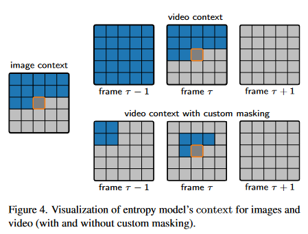
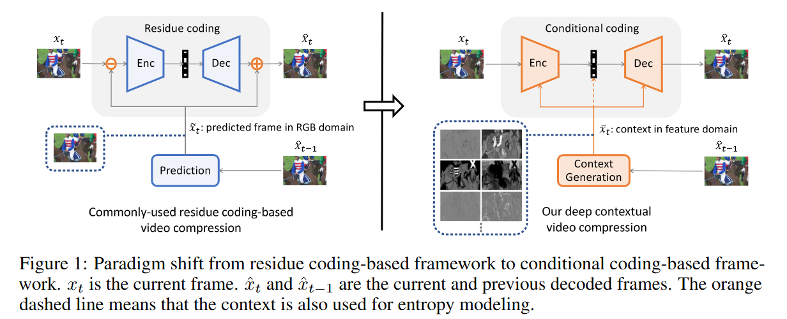
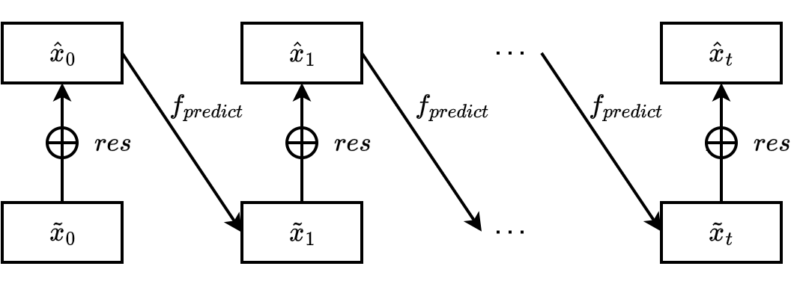
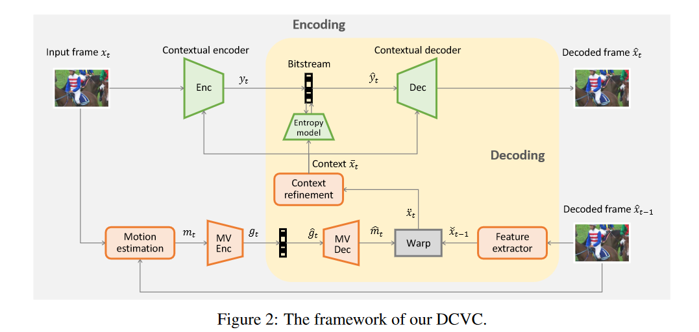
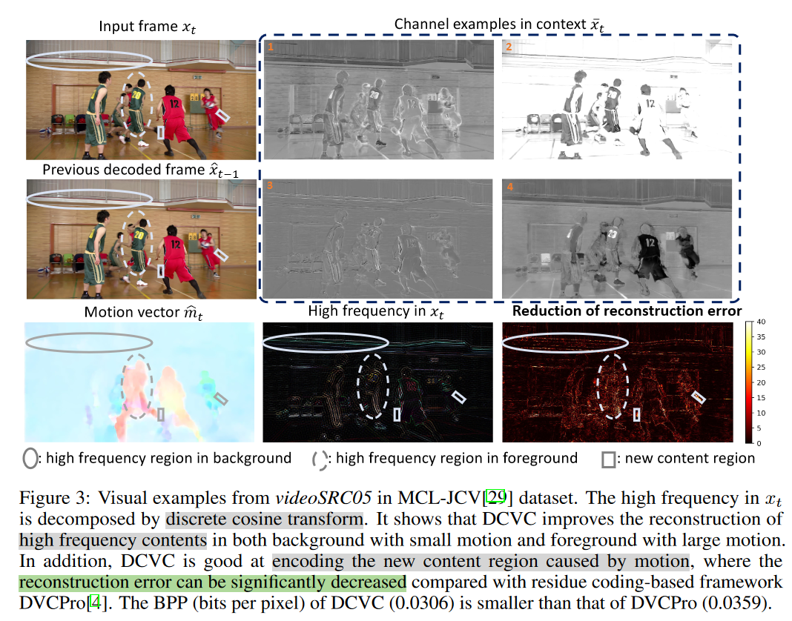
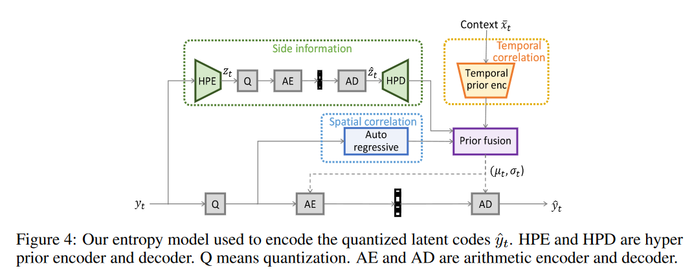
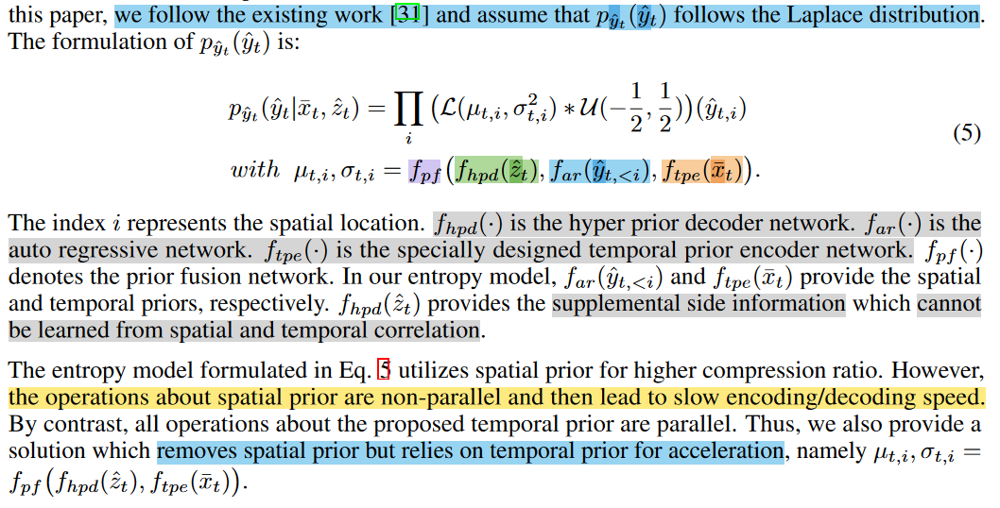
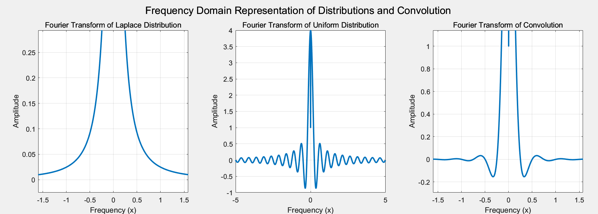
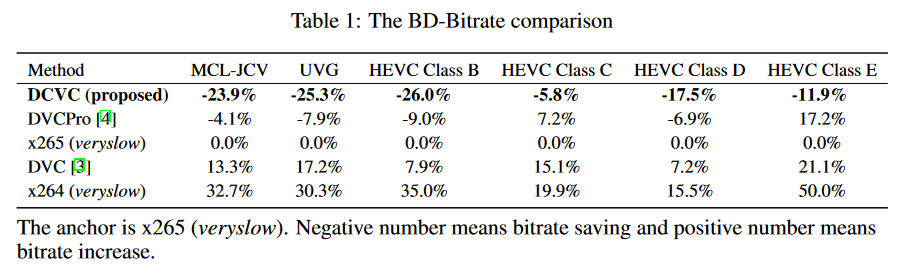
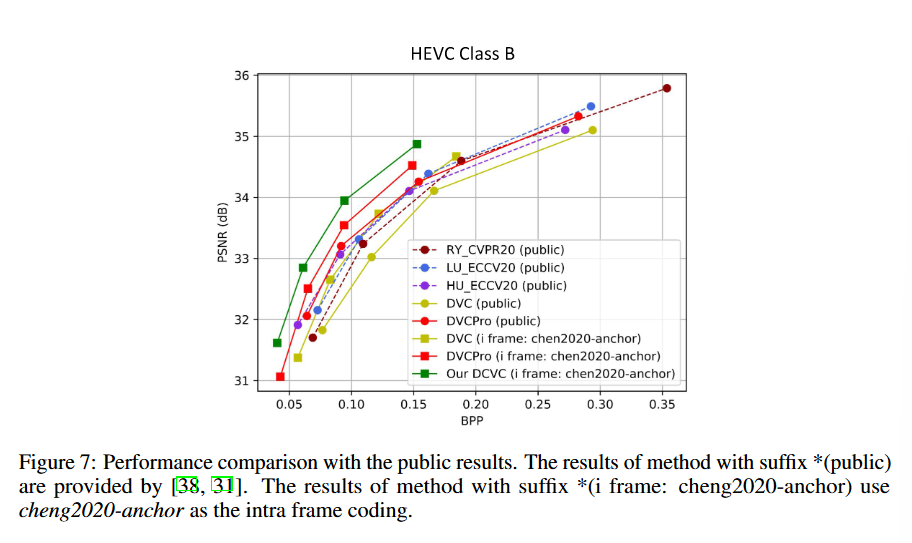

笔记《Deep Contextual Video Compression》
Abstract
Deep Contextual Video Compression (DCVC)，提出使用 conditional coding 代替 predictive coding，并提出一种 feature domain context 作为 condition。
- 使用高维上下文为 codec 提供更丰富的信息
- condition 可替换（扩展性）
- 实验中比 x256 节约 26.0% 的比特率
Intro
传统方法、多数 DL 方法：将预测帧与（解码后的）当前帧间的残差编码。DL 的引入主要改变了生成预测帧的方式。作者指出残差编码只通过人工设计的求差消除帧间冗余，因而并非最优（即其消除冗余的方式非最优）；其信息熵大于等于条件编码：
从此式可以稍微明白条件编码中“条件”的含义。猜测：传统方法中用残差表示了帧间关系，此处则将上下文特征作为条件，用转移概率表示帧间关系，从 变为
此外作者指出，残差编码实际为条件编码的简化，带有“当前像素仅依赖于预测的像素”的强假设，理论上当前像素与已解码的所有帧和当前帧的已解码部分都相关。belike：（来自 https://arxiv.org/abs/2312.02753）

之前由于是人工设计，无法考虑这么大的上下文，但用 DL 可以。作者联系单图像压缩的自编码器，提出将自编码器引入视频压缩。
自编码器对应了转移函数 ？
作者将 condition 定义为可学习的上下文特征，并将学到的特征用于编、解码器和熵模型。如下面 DCVC 的结构图所示：

从图中看到之前的猜测可能不太对，没有显式的“预测”步骤（没有 ），而像
如何学习 condition？作者提出在特征域使用运动估计和运动补偿（MEMC）指导特征提取。
怎么个“指导”法？
如前文所述，DCVC 在压缩率方面得到了明显提升。
“For 1080p standard test videos, our DCVC can achieve 26.0% bitrate saving over x265 using veryslow preset” 对于“veryslow preset”如何理解？
作者提到实际上 conditional coding 的观点之前就有一些工作提出过，但局限于单独的编码部分、解码部分，或需要额外的人工设计进行特征筛选（？）。相比之下，DCVC 涵盖了编、解码和熵模型，更全面成熟；此外考虑到 condition 可扩展，实际上是提供了一个框架。
作者将贡献总结为：
- 设计了基于 conditional coding 的视频压缩框架，对 condition 的定义、使用和学习方式是全新的。且得到了更高的压缩率。
- 提出了简单高效的、在编解码和熵模型中利用上下文的方法。特别设计了熵模型，可以利用时空上的相关性达到更高压缩率，或只利用时间相关性来提高速度。
- 将 condition 定义为特征空间中的 context。指出 context 维度越高，对高频内容重建提供信息越多。
限定在“高频”？—— 后文有解释
- 框架可扩展，便于改进。
Related Works
作者提到 MEMC 是 explicit 的，没有用到 latent state，因而更容易训练。
Method
关于框架
传统方法的公式描述：
传统方法中，冗余的消除关键是用预测帧和当前帧的差保留非冗余部分。生成方式不变，则相同的当前帧总能构造出相同的预测帧，只要保留每一步的残差，就能在每一步由上一步预测帧得到当前帧，让迭代继续下去：

是这样吗？初始化呢？
VCDC 的公式描述：
其中 同样可以作为 的实现，此时编解码器和熵模型使用三通道的 condition（即生成的图像张量）。

对应于公式描述，DCVC 的解码流程：
- 从上一帧已解码图像中提取 ？
- 将 ？和压缩包输入熵模型 ？
- 将 ？和熵解码后的比特流输入解码器
context 是如何生成的？与 MV 是独立生成的吗？MEMC 在流程中的什么位置？二者如果是分别生成的，如何结合？熵模型如何利用 condition？dec 如何利用 condition？
如何生成 context？如何用 context 生成 latent codes？

右下角图像为 DCVC 与基于残差编码的框架的误差减少量可视化，据此作者得出 DCVC 提高了高频部分重建质量的结论。
看这一段时突然想到：每个通道（特征图）都不一样，在经过的结构相同的前提下为什么会不一样？想到应该是因为卷积核初始化值不一样。但为什么自己上课搭网络时没有初始化过卷积核，却也能训练模型（如果按前面的考虑，若卷积核初始权值都相同，应该只能学到一张特征图？试一试）？应该是 pytorch 有默认初始化 https://discuss.pytorch.org/t/how-are-layer-weights-and-biases-initialized-by-default/13073 https://discuss.pytorch.org/t/what-are-the-default-initialised-matrix-values-of-the-convolution-kernels-in-pytorch/92233/2 https://discuss.pytorch.org/t/clarity-on-default-initialization-in-pytorch/84696 但似乎也可以全初始化为 0，那么差异是如何引入的
关于熵模型
交叉熵给出了比特率（有效信息所需？）的下界：
：压缩后数据 的比特率。此处“率”应该是像素而非时间上的平均（bpp）？—— 是 bpp ：是关于 的期望，其中 服从分布 。： 实际的概率质量函数。未知 ： 估计的概率质量函数。：量化后的 latent codes
待求的熵模型实际就是 （？），而对于 有：
所以此处
即
所以(1)式实际是 ？为什么用期望来表示？
若 p、q 足够接近，即 p 估计得足够好，则有：
作者指出，通过 arithmetic coding 得到的编码比特率接近交叉熵，即可以做到：
那么只要最小化 就可以最小化比特率。p、q 越接近交叉熵越小？所以目标是让估计的 分布 p 更接近实际分布 q。
p、q 越接近交叉熵越小？

关于三种 prior 是什么，以及网络结构是怎么实现的（比如 prior fusion 是怎么做的），以及为什么这样设计网络结构，现在都还不理解
目前的理解：熵模型部分假设 服从拉普拉斯分布，并根据 和 估计分布的参数 和 。

：假设的拉普拉斯分布 ：均匀分布 ：卷积 ：latent code 的第 维分量 ：假设 的分量间独立？连乘求得分量的联合分布，即为总的概率分布（求积之后如何分离？或者说如何利用整体的概率分布） 能否理解为截取特定频率段，对应地，学习得到 的每一维只反映一定频率范围的特征？

尝试用 matlab 作图来直观感受，均匀分布似乎确实将主要图像限制在了一定频率范围内。
关于 context
学习 context 就是提取与重建当前帧有关的信息，如上一帧的图像特征。由于视频内容多、对象运动复杂的特点，仅仅前后帧对应像素位置关联，无法将前后帧中有相对运动的对应特征关联起来。所以作者也借鉴了 MEMC 的思路，但做出改进，即：MEMC 直接提取 RGB 图像的信息（输入是原图），而作者选择对已提取的特征图应用 MEMC（输入是特征图）。
：特征提取网络，“将当前帧由 pixel domain 转到 feature domain”，应该就是卷积得到 feature volume？：由光流估计网络得到的运动向量，参考帧 与当前帧 之间的。输出后经过编码解码，解码后的 MV ：“The decoded guides the network where to extract the context through warping operation”，可能看代码才能知道到底做了什么作者提到 warp 会损失空间关联信息，所以增加了 优化 context，得到最终的
关于训练
”The target of video compression is using least bitrate to get the best reconstruction quality.“，相应的损失函数设计为：
（distortion）衡量重建质量，（bitrate）衡量压缩率， 用于二者的 tradeoff。 可以用 MSE、MS-SSIM 等指标；作者选择用 latent code 的预测值 分布和真实值 分布之间的交叉熵作为 。
Results

此处 anchor 与目标检测所指不同，x256 (veryslow) 是 x256 编码器的一种模式？此处 anchor x265 是否对应前文的 arithmetic coding？
训练时，”randomly crop videos into 256x256 patches.“
对照实验中，对于传统方法 x264 和 x265，作者提到 ”use the constant quantization parameter setting rather than constant rate factor setting to avoid the influence of rate control.“

之前没找到相关说明，从此图确定文中比特率指的是相对于像素（BPP)而非时间
关于多次出现的 cheng2020-anchor https://interdigitalinc.github.io/CompressAI/zoo.html#cheng2020-anchor https://github.com/ZhengxueCheng/Learned-Image-Compression-with-GMM-and-Attention 是因为该方法已经成为常用参考标准？
Discussion
作者指出三点局限：
- 无监督学习 context，通道（特征图）间有很多重复。（之前我对此还有疑问）
- 生成 context 时只用了一帧作为参考帧（结构设计）
- 没有考虑重建时间的稳定性（损失函数设计）